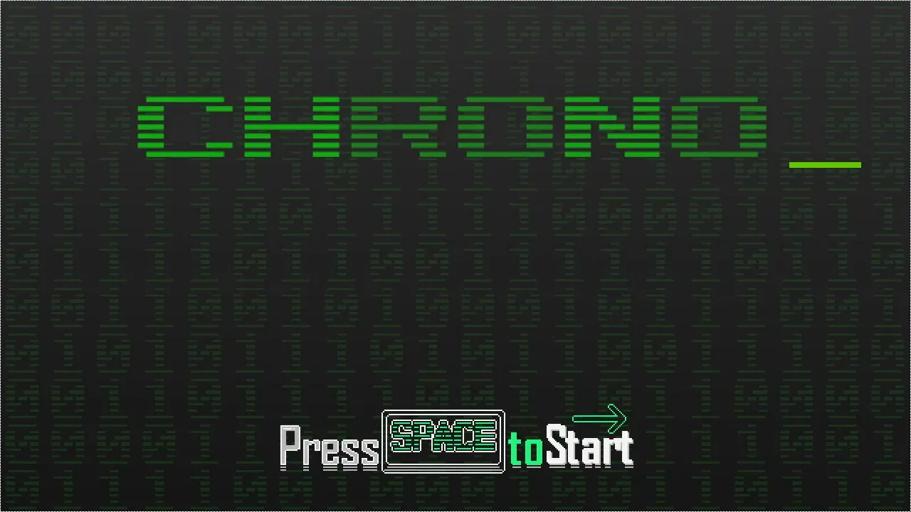
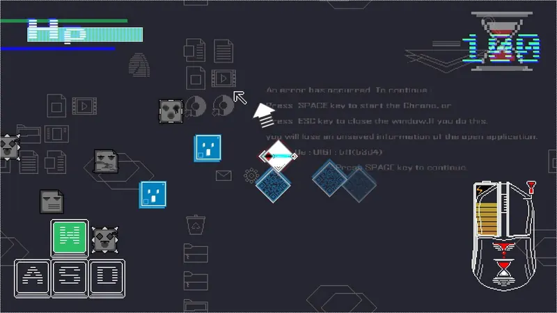
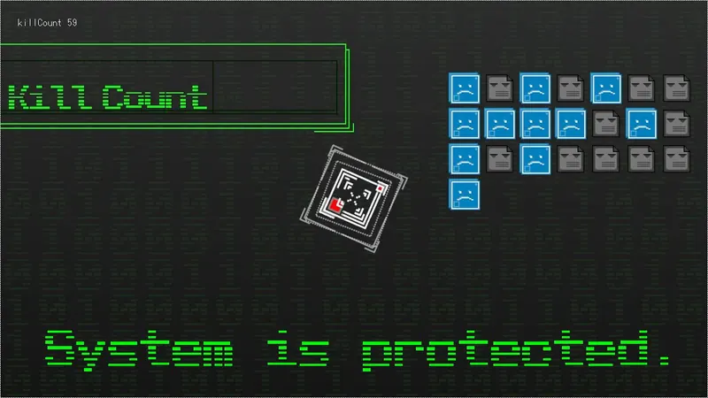

チーム作品紹介 / 1年生編



- 開発概要
- 開発環境学内製エンジン
- 開発人数3人
- 制作期間1ヶ月
作品紹介・こだわりポイント
制限時間内に、時間を止めて敵をクリックし沢山連鎖させてスコアを稼ぐゲームです。
タイトルシーンとゲームシーンのシステム部分の土台を制作しました。学内製エンジンをチームメンバーがより簡単に扱えるようにし、行列演算やゲームを支えるコア部分の設計に力を入れました。
TEAM WORK ─ 1年生
チーム作品紹介 / 1年生編



制限時間内に、時間を止めて敵をクリックし沢山連鎖させてスコアを稼ぐゲームです。
タイトルシーンとゲームシーンのシステム部分の土台を制作しました。学内製エンジンをチームメンバーがより簡単に扱えるようにし、行列演算やゲームを支えるコア部分の設計に力を入れました。